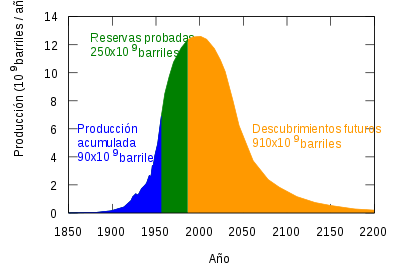
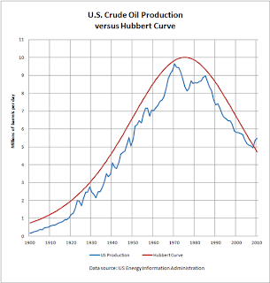
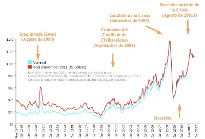
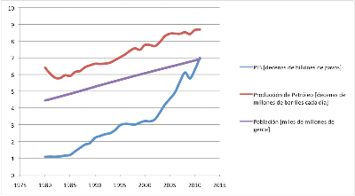
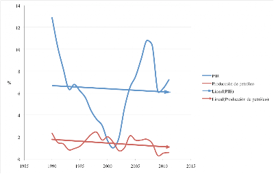
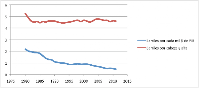
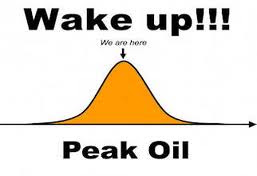

PETRO-CRACK: Nos frenan porque los cambios se les quedan grandes
Después de mucho divagar por el inabarcable mundo de la información en busca de comprender el meollo de este entuerto en el que, nadie me pretenda hacer creer lo contrario, la cosa va pa´bajo, resulta que repentinamente me reencontré con una idea que me hizo ver la luz. De la reflexión sobre ella y las evidencias circudantes mostradas por muchos otros, brota este pequeño texto.
El pico de Hubbert
El tal Hubbert, un tipo que curraba en lo alto de compañías petroleras a mediados del siglo pasado, comprendió que la producción de cualquier yacimiento petrolífero aumentaba hasta un ritmo máximo para descender a continuación, presentando un pico que coincide con la extracción de la mitad del recurso existente. Y resulta que es válido para un pozo cualquiera, para un campo petrolífero cualquiera, un país cualquiera, o para un mundo... bueno, para el mundo entero. Lo más importante al observar esta afirmación es mantener muy clara la diferencia entre ritmo de producción y existencias restantes, es decir, lo rápido que se puede obtener el petróleo y lo que queda en el yacimiento.
Se arrojan argumentos que pretenden contradecir esta perogrullada, como el de que el aumento del precio hace que otras reservas se conviertan en rentables, o que las nuevas exploraciones y avances técnicos revertirán esa tendencia a la ralentización. Cuando te comes una buena pata de pollo, primero la preparas bien, la colocas en el plato, la pelas y le haces unos cortes inteligentes para poder trabajarla; luego empieza a soltarte amablemente esos pedacitos jugosos y carnosos que llenan la boca. Pero cuando le has dado un buen apretón empieza el trabajo de rebuscar pedazos menos fáciles y carnosos, y por último arrebañar. Algunos, incluso roemos, pero casi más que nada por nostalgia de aquellos momentos en que la boca se nos abarrotaba de exquisitas hebras. Si piensas en la cazuela entera, es igual: primero las tajadas más accesibles y suculentas, a continuación la gula invade y vas a por lo más abundante, pero cada vez hay que rebuscar más. Finalmente, por mucho que el hambre y el vicio aprieten, no queda más que revolver en los escombros en lo que nadie quiso y escudriñar huesecillos. El mercado no tiene nada que contestar aquí: está escrito en la naturaleza misma de las cosas, y a quien las ve se le aplaude por la lucidez de su pensamiento, además de asignar su apellido al concepto enunciado.

En 1956, nuestro hombre predijo que la producción estadounidense tocaría techo en 1965-1970. Se le fue la mano en un año, pues sucedió que se retrasó hasta 1971. A modo de validación de la hipótesis...

Por otro lado, ¿cuáles son los requisitos clave de cualquier actividad o proceso? Muy bien: la energía y la materia prima. Y, ¿cuáles son en la actualidad? Muy bien: ambas son el petróleo. El petróleo es la energía primaria más importante y una de las materias primas más profundamente insertadas en los procesos productivos. Coches de petróleo, calefacciones de petróleo, carreteras de petróleo, plásticos de petróleo, medicinas de petróleo, agricultura de petróleo... y ya me cansé. Pero hay algo más importante aún que todo lo que hacemos como especie con este oscuro potingue: solo unos pocos elegidos lo pueden vender. No se pierda de vista este hecho. Cuando el mundo andaba a fuerza de quemar madera, uno iba al bosque y talaba unos troncos, porque al lado de casa siempre hubo bosque. Luego vino el carbón y, bueno, no al lado de casa, pero sí cerca, en cada país hay carbón en mayor o menor medida. Pero ojo, un pozo petrolífero no se explota así como así. Hay que comprometer muchos recursos, asegurar que esa gente te dejará sacarlo de su tierra... no es nada de andar por casa. Y no todos tenemos uno cerca.
La historia contada en $/barril
No hay más que sañalar algunos acontecimientos sobre esta maravillosa plantilla:

Y ya está. Se observa claramente cómo el estallido de la crisis, el 15 de septiembre, y el máximo precio del barril, 147$, el 12 de julio, tienen lugar en menos de dos meses. El el estallido es identificado con la declaración en bancarrota de “los Lehman Brothers” Holding Inc., el cuarto mayor banco de inversión estadounidense, por supuesto, hasta entonces. Se comió un buen puñado de hipotecas de alto riesgo que, no podía ser obviado más tiempo, no se podrían devolver si todo el dinero tuviera que destinarse a pagar la factura energética. Quienes habían apostado por su quiebra, habían tomado una decisión inteligente.
El primer asunto que aquí se plantea es el del desbocado incremento en el precio a partir de 2002 que, como no podría ser de otra manera, se debe a la relación entre demanda y oferta. Por un lado, la demanda se encuentra íntimamente vinculada al Producto Interior Bruto, que es la magnitud más socorrida para reflejar la actividad económica. Alguien preferirá pensar en número de consumidores, y también vale. Así que ahí va otro sencillo gráfico:

Y otro...

Y solo uno más...

Datos: International Moetary Fund, World Economic Outlook Database (Sptember 2011)
U.S. Energy Information Administration
Bien, pues ahí se observa la evolución de la demanda de petróleo: duplicada en, a penas, los últimos 8 años. ¿No es fantástico cuando las cosas se entienden en un sólo vistazo? No ver que el precio del petróleo no puede si no crecer considerablemente ha de deberse a no querer verlo, pues la presión de la demanda aumenta mucho más rápido, a un 6-8% anual, que la producción de recurso, a menos del 2% anual. Se escucha a menudo un intento desesperado de evitar esta inquietante evidencia, afirmando que una aumento en el precio promueve la entrada en la franja de rentabilidad de nuevas reservas; sin embargo, los hechos lo niegan. ¿Se correspondió la escalada de precio hasta 2008 con un incremento sustancial en la producción? No. Ya hemos comido la mitad de la cazuela, y a partir de ahora toca arrebañar. Pero... ¡estamos en la cima!

Los fusibles de la economía
Quizá te hayas fijado en que la instalación eléctrica de la casa del banco en que vives soporta un máximo de 15 Amperios, pues corrientes superiores suponen riesgos para los aparatos y las personas. Los fusibles, y otros mecanismos, se disparan inmediatamente si el valor máximo es escedido. Y todo se para. Los fusibles de la economía mundial se disparan a 147 $/barril; pero, ¿qué protegen los plomos de la economía? Pues protegen del cambio y de la descentralización de poder. Es de todos sabido que la economía basada en el petroleo es gigantesca, y su inercia está en relación a ese volumen: es natural encontrar gran resistencia a variar su trayectoria. Y es de todos sabido que no está en manos de muchos: grandes corporaciones cortan el bacalao en el negocio petrolero, no quieren nuevos competidores mermando su dominio en la producción energética.
Cuando se mencionan fuentes de energía renovables se evoca la brisa, la caricia del sol en la cara, el fantástico sonido del mar, aparece también un pájaro volando en libertad y una niña plantando una arbolico. Luego salen unas letras muy suaves en un fondo verde diciendo que respetan mucho la naturaleza. Sin embargo, siempre hay un mensaje implícito de utopía, de futuro, de “hoy no: mañana”. En ese momento alguien abre la bocaza y dice: “pero eso, ¿cuánto cuesta?”. Por ello, ante una subida espectacular del precio del petróleo, es imprescindible para los que cortan el bacalao mantenerlo por debajo del coste de otras fuentes energéticas que desafíen su posición ventajosa. Nunca podrán absorver ese nuevo mercado: nunca será como el que ahora poseen. Porque es abundante, y porque es distribuido. El cambio que supone es inmenso, inconcebible, inadmisible: los ciudadanos pasando de consumidores... a productores. Aterrador. Muy difícil sería que alguien aceptara pagar por el sol que recibe, muy difícil sería cobrar por un viento al que todos tenemos acceso. No se puede mercadear con lo abundante. Cualquier persona con ojos y,o u oídos debe vomitar ante esa aberración a la inteligencia.
La crisis como aplazamiento de lo inevitable
Si no se puede ofrecer más petróleo, pues que no pidan tanto. Para que el chollo dure más, siempre puedes hacer que vaya más despacio. Visto así no sorprende tanto la recesión, la caída de actividad que se observa en la merma en el crecimiento. Pero, ¿cómo se para un mundo? Todos entendemos muy bien que el sector financiero es muy malo, porque no crea nada que sirva para nada y controlan muchos aspectos de la vida de las gentes. Y si un día por la mañana se levantan con ganas de retirar la financiación a un continente, llaman a su oficina y dicen: “Oye, para Europa. ¿Me compraste los post-it de colores?” Y Europa se para en seco antes de la hora de comer. No se olvide que las grandes firmas financieras, los grandes bancos, crecieron financiando las inversiones abominables que requirió la industria del petróleo desde la primera mitad del siglo XX, y en financiar la “seguridad en el abastecimiento”, por lo que finanzas y petroleras son grandes socios y buenos amigos.
Resulta que las deudas no son problema hasta que se empieza a oler que habrá problemas para devolverlas: ¿cómo se harán frente desde unas economías detenidas? Se nos dice que hay que meterse en casa y ahorrar, pero no hay riqueza que ahorrar en un mundo quieto; que hay que arrimar el hombro, pero no acabo de ver qué es lo que quieren que empuje. Es más, la riqueza que crea la sociedad ya solo puede mermar el dominio de la gente del petróleo: bien por incremento en la demanda y encarecimiento del recurso, bien por desarrollo de tecnología de aprovechamiento de fuentes energéticas abundantes y distribuidas. A partir del pico, el tiempo juega en su contra.
Y nos indignamos porque nuestras economías se hunden, nuestras empresas se paran, porque nos echan a la calle. Les explicamos que toda esa austeridad y el abrochar los cinturones, como si los lleváramos colgando, entierran el crecimiento económico. De repente el déficit se torna inaceptable y hay que recortar gastos; pero igual de efectivo resulta aumentar los ingresos, el fruto del trabajo de millones de personas ansiosas de ser útiles, el rédito de la actividad de una sociedad. Se dice “déficit” unas 2300 veces en cada telediario, “gasto” otras 1700, pero es tabú mencionar “ingresos”. Ingenuamente, se lo explicamos como si no lo supieran, pero ya creo si lo saben: es su objetivo.
Creemos, como sociedad, que esta vez hemos identificado al fin al enemigo, que son los banqueros y el mercado. Y una vez más, en la cómica historia de la humanidad, la sociedad va un paso por detrás de quienes no quieren bajarse del trono. Pero, la tecnología y la información se revelan a momentos como amenazas a ese dominio, cada vez más rápidamente. Nos paran porque vamos muy rápido, porque aparece nueva riqueza cada vez más y más difícil de acaparar. Solo crear y compartir puede liberar al mundo de la esclavitud. De hecho, estoy convencido de que ya lo hace, que ya lo ha hecho, y de que lo hará más aún en los años que pronto vendrán. Cada año vale un mundo y cada año perdido lleva varios años recuperarlo. Oportunidades como las de hoy no tienen precedente en la historia del hombre: estemos a la altura.
Te gusta? Pues más DelightfulObservaciones:
¿Soy más rico que Fernando I de Aragón?
Europeos del centro y la periferia, mercancía en manos de nuevos dueños
Hemos vivdo por debajo de nuestras posibilidades
Si esto no es una economía de guerra, es la mayor cagada del mundo moderno.
Para saber incluso más:
http://elainemeinelsupkis.typepad.com/evolution_news/2007/03/elaine_meinel_s_5.html
http://www.guardian.co.uk/business/2008/jul/12/oil.commodities
http://www.oei.es/revistactsi/numero4/resena3.htm
http://205.254.135.24/oiaf/aeo/otheranalysis/aeo_2006analysispapers/efhop.html
http://articles.businessinsider.com/2011-03-06/markets/29981085_1_oil-exporters-rise-in-crude-prices-housing-market
http://pages.stern.nyu.edu/~nroubini/papers/OilShockRoubiniSetser.pdf
http://techportal.eere.energy.gov/